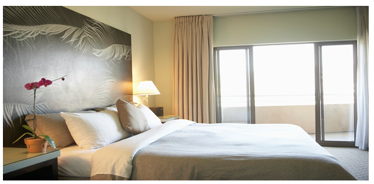
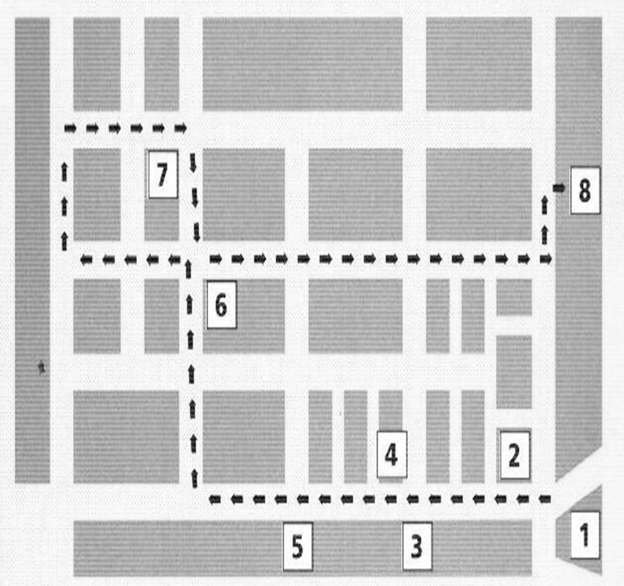

<!-- 원본: GENERAL8/reading (레거시 서버에서 2026-11-14 수집, 정답 제거) -->
<div class="legacy-content"><div id="pageContainer">
<div class="page" id="page-0">
<div class="flex flex-col md:flex-row gap-6">
<div class="w-full md:w-1/2 max-h-[600px] overflow-y-auto">
<h3 class="text-xl font-semibold text-purple-800 mb-4">
<b>SECTION 1</b>   <b>QUESTIONS 1-14</b>
</h3>
<div class="text-gray-700 leading-relaxed">
<div style="width:800px; border:1px solid #bbb; padding:20px;">
<p>
                                            Use the information in the description below to answer <b>Questions 1-3</b>.
                                        </p>
<br/>
<div>
<p>
<b>Morpeth</b> is today a small town about two hours’ drive north of
                                                Sydney.
                                                The town of Morpeth grew from an original 2000 acres of land given to an
                                                English army officer, Lieutenant Edward Close (1790-1866), in 1821.
                                                During the 1830s and 1840s Morpeth became a major river port, due to its
                                                favourable location. Produce, hides and timber were brought to Morpeth
                                                from inland New South Wales and shipped down the Hunter River to the
                                                coast and then to Sydney. However, in 1870 a railway line reached the
                                                town, and the importance of river shipping began to decline. Today,
                                                Morpeth, with its beautiful old buildings, is a popular tourist
                                                destination.
                                            </p>
</div>
</div>
<br/>
<div style="width:800px; border:1px solid #bbb; padding:20px;">
<p>
                                            Read these four advertisements for places to stay near Morpeth, and then
                                            answer <b>Questions 4-7.</b>
</p>
<br/>
<div>
<div>
<b>WHERE TO STAY</b>
<br/>
<b style="font-size: 30px;">A</b><br/>
<div style="width:700px; border:1px solid #000; padding:10px;">
<b>COUNTRY COMFORT INN,</b><br/>
                                                    HUNTER VALLEY<br/>
<div style="height:10px;"></div>
                                                    The Country Comfort Inn, Hunter Valley, is a beautifully restored
                                                    125-year-old building just 20 minutes from the vineyards.<br/>
<div style="height:10px;"></div>
                                                    Formerly an orphanage, the Inn is set on 10 acres of landscaped
                                                    gardens complete with pool, sauna, tennis court, spa, gym, billiard
                                                    room, guest lounge, fireplace, cocktail bar, and two restaurants.
                                                    Special packages available.<br/>
<div style="height:10px;"></div>
                                                    New England Highway, Maitland<br/>
<div style="height:10px;"></div>
                                                    Call toll free 1800 065 064<br/>
                                                    or (02) 4932 5288
                                                </div>
</div>
<br/>
<div>
<b>Accommodation</b>
<br/>
<b style="font-size: 30px;">B</b><br/>
<div style="width:700px; border:1px solid #000; padding:10px;">
<b>SIESTA MOTEL</b><br/>
                                                    “Spend a night–not a fortune”<br/>
<div style="height:10px;"></div>
                                                    That’s the Budget Motel chain motto.
                                                    The Siesta Motel, rated 3-star, is conveniently placed at the
                                                    gateway to the winery district and nearby to the historic towns of
                                                    Morpeth and Wollombi.<br/>
<div style="height:10px;"></div>
                                                    The family-owned and operated Siesta offers airconditioned comfort
                                                    and a friendly atmosphere. A free light breakfast is delivered to
                                                    your suite and excellent meals are available at the Maitland City
                                                    Bowling Club next door.<br/>
<div style="height:10px;"></div>
                                                    Quality of accommodation is assured and the tariff is the lowest in
                                                    the district.<br/>
<div style="height:10px;"></div>
                                                    258 New England Highway, Maitland.<br/>
<div style="height:10px;"></div>
                                                    Phone (049) 32 83 22<br/>
</div>
</div>
<br/>
<div>
<b style="font-size: 30px;">C</b><br/>
<div style="width:700px; border:1px solid #000; padding:10px;">
<br/>
<b>ENDEAVOR EAST MAITLAND MOTEL</b><br/>
<div style="height:10px;"></div>
                                                    28 modern, comfortable 3-star units which open onto the swimming
                                                    pool and barbeque area. All units feature TV and videos,
                                                    airconditioning. 2 with spas.<br/>
<div style="height:10px;"></div>
                                                    Fully licensed restaurant with cocktail bar and lounge is open 7
                                                    nights. Close to all amenities.<br/>
<div style="height:10px;"></div>
                                                    New England Highway, East Maitland.<br/>
<div style="height:10px;"></div>
                                                    Phone (02) 4933 5488
                                                </div>
</div>
<br/>
<div>
<b style="font-size: 30px;">D</b><br/>
<div style="width:700px; border:1px solid #000; padding:10px;">
<b>ESKDALE COUNTRY COTTAGES</b><br/>
<div style="height:10px;"></div>
                                                    Rustic cottages secluded amongst gum trees provide quietness and
                                                    privacy on 200 acres. The cottages are located on the historic beef
                                                    cattle property, “Eskdale”, nestled in the Williams Valley.<br/>
<div style="height:10px;"></div>
                                                    Each cottage is completely self-contained having 2 bedrooms, full
                                                    kitchen facilities, and sitting rooms with TV and video, and offers
                                                    comfortable rural accommodation to those who enjoy the delights of
                                                    the country yet still wish to retain access to the city. Situated
                                                    close to the towns of Morpeth, Maitland, Port Stephens &amp; rainforests
                                                    around Dungog.<br/>
<div style="height:10px;"></div>
                                                    Nelson Plains Road, Seaham NSW 2324.<br/>
<div style="height:10px;"></div>
                                                    Phone (02) 4988 6207<br/>
                                                    Fax (02) 4988 6209
                                                </div>
</div>
</div>
</div>
<br/>
<div style="width:800px; border:1px solid #bbb; padding:20px;">
<p>Read the description below of the town of Morpeth and answer the <b>Questions
                                                8-14</b> that follow.</p>
<br/>
<div>
                                            The best way to see Morpeth is to take the Morpeth Heritage Walk. This
                                            covers
                                            about three kilometers, and takes visitors past many beautiful historical
                                            buildings. Starting at Fig Tree Hill, which has picnic facilities, stroll
                                            past the Surgeon’s Cottage, built in 1845, formerly home of the local
                                            doctor, now shops. From there you will come to Morpeth Bridge, erected in
                                            1870, which replaced a ferry boat. Opposite it on the right is the
                                            Courthouse, still in use today. Continue your walk past the historic Railway
                                            Station, then turn into George Street. Stroll past gracious houses until you
                                            come to the Church of the Immaculate Conception on your right, built of
                                            bricks made in Gosford. Continuing up George Street, you come to the
                                            shopping district; browse through the shops or stop for refreshment. Your
                                            tour of Morpeth will finish at magnificent Closebourne House, built in 1826
                                            by Lieutenant Edward Close.<br/>
<div style="height:10px;"></div>
<div style="width:780px; display: flex; justify-content: left;">
<div style="width:150px; padding:10px;">
<b></b><br/>
<b>A</b> Fig Tree Hill<br/>
<b>B</b> Ferry Boat<br/>
<b>C</b> George Street<br/>
<b>D</b> Gosford<br/>
<b>E</b> Church of the Immaculate Conception<br/>
<b>F</b> CloseHourne House<br/>
<b>G</b> Morpeth Bridge<br/>
<b>H</b> Shopping district<br/>
<b>I</b> Surgeon's Cottage<br/>
<b>J</b> Railway Station<br/>
<b>K</b> Courthouse<br/>
</div>
<div style="width:450px; padding:10px;">

</div>
</div>
</div>
</div>
</div>
</div>
<div class="w-full md:w-1/2 max-h-[600px] overflow-y-auto">
<div class="question mb-6">
<div id="box3nav">
<p>Write
                                            your answer in <b>boxes 1-3</b> on your answer sheet.<br/>
<b>QUESTIONS 1 - 3</b>
</p>
</div>
<br/>
<div>
<b>1.</b> When was Lieutenant Close given the land on which Morpeth
                                        grew? <input autocomplete="off" class="border border-purple-300 rounded px-3 py-2 w-full bg-white text-gray-800" name="q1" placeholder="(1)" style="width:300px; border:0; border-bottom:1px solid #000; text-align:center;" type="text"/><br/>
<div style="height:5px;"></div>
<b>2.</b> On what river is Morpeth situated? <input autocomplete="off" class="border border-purple-300 rounded px-3 py-2 w-full bg-white text-gray-800" name="q2" placeholder="(2)" style="width:300px; border:0; border-bottom:1px solid #000; text-align:center;" type="text"/><br/>
<div style="height:5px;"></div>
<b>3.</b> When did trains first get to Morpeth? <input autocomplete="off" class="border border-purple-300 rounded px-3 py-2 w-full bg-white text-gray-800" name="q3" placeholder="(3)" style="width:300px; border:0; border-bottom:1px solid #000; text-align:center;" type="text"/><br/>
<div style="height:5px;"></div>
</div>
</div>
<div class="question mb-6">
<div id="box3nav">
<p><b>QUESTIONS 4 - 7</b><br/>
                                            Answer the questions below by writing the letters of the appropriate
                                            advertisements in <b>boxes 4-7</b> on your answer sheet.
                                        </p>
</div>
<br/>
<div>
<b>4.</b> Which two places to stay have restaurants? <input autocomplete="off" class="border border-purple-300 rounded px-3 py-2 w-full bg-white text-gray-800" name="q4" placeholder="(4)" style="width:150px; border:0; border-bottom:1px solid #000; text-align:center;" type="text"/><br/>
<div style="height:5px;"></div>
<b>5.</b> Which place claims to offer the cheapest rate? <input autocomplete="off" class="border border-purple-300 rounded px-3 py-2 w-full bg-white text-gray-800" name="q5" placeholder="(5)" style="width:150px; border:0; border-bottom:1px solid #000; text-align:center;" type="text"/><br/>
<div style="height:5px;"></div>
<b>6.</b> For more information, to which place can you telephone free of
                                        charge? <input autocomplete="off" class="border border-purple-300 rounded px-3 py-2 w-full bg-white text-gray-800" name="q6" placeholder="(6)" style="width:150px; border:0; border-bottom:1px solid #000; text-align:center;" type="text"/><br/>
<div style="height:5px;"></div>
<b>7.</b> At which place can the guests cook their own food? <input autocomplete="off" class="border border-purple-300 rounded px-3 py-2 w-full bg-white text-gray-800" name="q7" placeholder="(7)" style="width:150px; border:0; border-bottom:1px solid #000; text-align:center;" type="text"/>
</div>
</div>
<div class="question mb-6">
<div id="box3nav">
<p><b>QUESTIONS 8 - 14</b><br/>
                                            Using information from the text, fill in the names of the numbered tourist
                                            attractions on the map. Write your answers in the <b>boxes 8-14</b> on your
                                            answer
                                            sheet. The first one has been done for you as an example. <b>Note: there are
                                                more names than you will need.</b>
</p>
</div>
<br/>
<div>
<b>Example ①=_____A____</b><br/>
<div stylㅇ10px;"=""></div>
<b>8</b> ② =<input autocomplete="off" class="border border-purple-300 rounded px-3 py-2 w-full bg-white text-gray-800" name="q8" placeholder="(8)" style="width:150px; border:0; border-bottom:1px solid #000; text-align:center;" type="text"/><br/>
<div style="height:5px;"></div>
<b>9</b> ③ =<input autocomplete="off" class="border border-purple-300 rounded px-3 py-2 w-full bg-white text-gray-800" name="q9" placeholder="(9)" style="width:150px; border:0; border-bottom:1px solid #000; text-align:center;" type="text"/><br/>
<div style="height:5px;"></div>
<b>10</b> ④ =<input autocomplete="off" class="border border-purple-300 rounded px-3 py-2 w-full bg-white text-gray-800" name="q10" placeholder="(10)" style="width:150px; border:0; border-bottom:1px solid #000; text-align:center;" type="text"/><br/>
<div style="height:5px;"></div>
<b>11</b> ⑤ =<input autocomplete="off" class="border border-purple-300 rounded px-3 py-2 w-full bg-white text-gray-800" name="q11" placeholder="(11)" style="width:150px; border:0; border-bottom:1px solid #000; text-align:center;" type="text"/><br/>
<div style="height:5px;"></div>
<b>12</b> ⑥ =<input autocomplete="off" class="border border-purple-300 rounded px-3 py-2 w-full bg-white text-gray-800" name="q12" placeholder="(12)" style="width:150px; border:0; border-bottom:1px solid #000; text-align:center;" type="text"/><br/>
<div style="height:5px;"></div>
<b>13</b> ⑦ =<input autocomplete="off" class="border border-purple-300 rounded px-3 py-2 w-full bg-white text-gray-800" name="q13" placeholder="(13)" style="width:150px; border:0; border-bottom:1px solid #000; text-align:center;" type="text"/><br/>
<div style="height:5px;"></div>
<b>14</b> ⑧ =<input autocomplete="off" class="border border-purple-300 rounded px-3 py-2 w-full bg-white text-gray-800" name="q14" placeholder="(14)" style="width:150px; border:0; border-bottom:1px solid #000; text-align:center;" type="text"/>
</div>
</div>
</div>
</div>
</div>
<div class="page" id="page-1">
<div class="flex flex-col md:flex-row gap-6">
<div class="w-full md:w-1/2 max-h-[600px] overflow-y-auto">
<h3 class="text-xl font-semibold text-purple-800 mb-4">Read the information about the
                                    Numeracy Centre below, and answer s <b>15-27</b>
</h3>
<div class="text-gray-700 leading-relaxed">
<div style="width:800px; border:1px solid #bbb; padding:20px;">
<center><b style="font-size:55px; color:#000; font-family: 'Times New Roman', Times, serif;">NUMERACY
                                                CENTRE </b>
</center>
<br/>
<p>Many business and marketing courses require a knowledge of introductory
                                            statistics, computing or mathematics. If you feel inadequately prepared for
                                            your course, you can get help from the <b>Numeracy Centre</b>, which offers
                                            FREE
                                            elementary help in mathematics and statistics. Grab a timetable from the
                                            Centre and drop in when it suits you.</p>
<div>
<p>
<b>COURSE A</b>  <br/>The first course available to students is
                                                a <b>Revision Course in Basic Maths.</b> This three-hour lecture will
                                                review
                                                mathematical concepts necessary for elementary statistics, such as
                                                fractions, area and percentages up to a Year 8 level of mathematics. It
                                                is not necessary to book, so feel free to drop in. This session is FREE!
                                            </p>
<br/>
<div style="height:10px;"></div>
<p>
<b>COURSE B</b>  <br/>
                                                For those students doing marketing courses, and other courses requiring
                                                statistical analysis, there is the <b>Bridging Course in Statistics for
                                                    Marketing.</b> This three-day course introduces ideas in elementary
                                                statistics to provide a starting point for further developments in
                                                statistical skills later on in other courses. The course is run in
                                                sessions of three hour, in the form of a one hour lecture followed by a
                                                two-hour tutorial. Examples will be drawn from reference books. The
                                                tutorials will be interactive where possible (e.g. drawing random
                                                samples from the population of numbered cards in class) with hands-on
                                                experience of data manipulation using MINITAB on a bank of PC’s.
                                            </p>
<br/>
<div style="height:10px;"></div>
<p>
<b>COURSE C</b>  <br/><b>Statistics for the Practitioner</b> is
                                                slightly different to the previous course, which must be completed
                                                before this course. This course is largely non-mathematical. It will
                                                instead concentrate on the interpretation and application of statistics
                                                rather than on computation. The statistical package MINITAB will be used
                                                as a teaching tool. This course will be conducted over two days in the
                                                form of workshops and small group discussions, with a strong emphasis on
                                                hands-on experience of data manipulation using computers.
                                            </p>
<br/>
<div style="height:10px;"></div>
<p>
<b>COURSE D</b>  <br/>A further course of interest to many
                                                students is <b>English for Computer Studies.</b> Students with English
                                                as their
                                                second language who will be needing elementary computing for their
                                                courses are encouraged to enrol in this 8-hour course. Students will
                                                learn through workshops giving hands-on experience. The cost of the
                                                course is $15 which includes notes and refreshments.
                                            </p>
</div>
</div>
</div>
</div>
<div class="w-full md:w-1/2 max-h-[600px] overflow-y-auto">
<div class="question mb-6">
<div id="box3nav">
<p><b>QUESTIONS 15 - 22</b><br/>
                                            Below is a chart summarising information about the Numeracy Centre courses.
                                            Complete the required details using information from the passage.
                                        </p>
</div>
<br/>
<div>
                                        Write your answers in <b>boxes 15-22</b> on your answer sheet.<br/>
<div style="width:740px; display: flex; justify-content: left;">
<div style="width:100px; border:1px solid #000;">
<div style="width:90px; height:150px; padding:10px;"><b>Course</b></div>
<div style="width:90px; height:150px; padding:10px;"><b>A</b></div>
<div style="width:90px; height:150px; padding:10px;"><b>B</b></div>
<div style="width:90px; height:150px; padding:10px;"><b>C</b></div>
<div style="width:90px; height:150px; padding:10px;"><b>D</b></div>
</div>
<div style="width:150px; border:1px solid #000;">
<div style="width:140px; height:150px; padding:10px;"><b>Cost</b></div>
<div style="width:140px; height:150px; padding:10px;"><input autocomplete="off" class="border border-purple-300 rounded px-3 py-2 w-full bg-white text-gray-800" name="q15" placeholder="(15)" style="width:120px; border:0; border-bottom:1px solid #000; text-align:center;" type="text"/>
</div>
<div style="width:140px; height:150px; padding:10px;"></div>
<div style="width:140px; height:150px; padding:10px;">none</div>
<div style="width:140px; height:150px; padding:10px;"><input autocomplete="off" class="border border-purple-300 rounded px-3 py-2 w-full bg-white text-gray-800" name="q21" placeholder="(21)" style="width:120px; border:0; border-bottom:1px solid #000; text-align:center;" type="text"/>
</div>
</div>
<div style="width:150px; border:1px solid #000;">
<div style="width:140px; height:150px; padding:10px;"><b>Number of hours
                                                        /
                                                        days</b></div>
<div style="width:140px; height:150px; padding:10px;">3 hours</div>
<div style="width:140px; height:150px; padding:10px;"><input autocomplete="off" class="border border-purple-300 rounded px-3 py-2 w-full bg-white text-gray-800" name="q17" placeholder="(17)" style="width:120px; border:0; border-bottom:1px solid #000; text-align:center;" type="text"/>hours
                                                </div>
<div style="width:140px; height:150px; padding:10px;">2 days</div>
<div style="width:140px; height:150px; padding:10px;">8 hours</div>
</div>
<div style="width:150px; border:1px solid #000;">
<div style="width:140px; height:150px; padding:10px;"><b>Name of
                                                        previous
                                                        studies required</b></div>
<div style="width:140px; height:150px; padding:10px;">none</div>
<div style="width:140px; height:150px; padding:10px;">none</div>
<div style="width:140px; height:150px; padding:10px;"><input autocomplete="off" class="border border-purple-300 rounded px-3 py-2 w-full bg-white text-gray-800" name="q19" placeholder="(19)" style="width:120px; border:0; border-bottom:1px solid #000; text-align:center;" type="text"/>
</div>
<div style="width:140px; height:150px; padding:10px;">none</div>
</div>
<div style="width:150px; border:1px solid #000;">
<div style="width:140px; height:150px; padding:10px;"><b>Teaching
                                                        Method</b>
</div>
<div style="width:140px; height:150px; padding:10px;"><input autocomplete="off" class="border border-purple-300 rounded px-3 py-2 w-full bg-white text-gray-800" name="q16" placeholder="(16)" style="width:120px; border:0; border-bottom:1px solid #000; text-align:center;" type="text"/>
</div>
<div style="width:140px; height:150px; padding:10px;">lecture and<br/>
<input autocomplete="off" class="border border-purple-300 rounded px-3 py-2 w-full bg-white text-gray-800" name="q18" placeholder="(18)" style="width:120px; border:0; border-bottom:1px solid #000; text-align:center;" type="text"/>
</div>
<div style="width:140px; height:150px; padding:10px;"><input autocomplete="off" class="border border-purple-300 rounded px-3 py-2 w-full bg-white text-gray-800" name="q20" placeholder="(20)" style="width:120px; border:0; border-bottom:1px solid #000; text-align:center;" type="text"/><br/>
                                                    and small groups
                                                </div>
<div style="width:140px; height:150px; padding:10px;"><input autocomplete="off" class="border border-purple-300 rounded px-3 py-2 w-full bg-white text-gray-800" name="q22" placeholder="(22)" style="width:120px; border:0; border-bottom:1px solid #000; text-align:center;" type="text"/>
</div>
</div>
</div>
</div>
</div>
<div class="question mb-6">
<div id="box3nav">
<p><b>QUESTIONS 23 - 27</b><br/>
                                            Courses <b>A</b> to <b>D</b> are each aimed at helping a specific group of
                                            students. Below
                                            is a list of different students. Match the students to the course that would
                                            help them most. In <b>boxes 23-27</b> on your answer sheet write the letter
                                            <b>A, B,
                                                C, or D</b> for the number of the course, or <b>N</b> if there is no
                                            course available
                                            for the student’s needs.
                                        </p>
</div>
<br/>
<div>
<b>23</b> Narelle, from Taiwan, has to use a computer to do assignments in
                                        her business
                                        studies classes. <input autocomplete="off" class="border border-purple-300 rounded px-3 py-2 w-full bg-white text-gray-800" name="q23" placeholder="(23)" style="width:150px; border:0; border-bottom:1px solid #000; text-align:center;" type="text"/><br/>
<div style="height:5px;"></div>
<b>24</b> Joe, who left high school 10 years ago, wants to brush up on his
                                        mathematics
                                        skills before he starts his studies for the year. <input autocomplete="off" class="border border-purple-300 rounded px-3 py-2 w-full bg-white text-gray-800" name="q24" placeholder="(24)" style="width:150px; border:0; border-bottom:1px solid #000; text-align:center;" type="text"/><br/>
<div style="height:5px;"></div>
<b>25</b> Jenny needs an advance course on computer graphics for her
                                        studies in Graphic
                                        Design. <input autocomplete="off" class="border border-purple-300 rounded px-3 py-2 w-full bg-white text-gray-800" name="q25" placeholder="(25)" style="width:150px; border:0; border-bottom:1px solid #000; text-align:center;" type="text"/><br/>
<div style="height:5px;"></div>
<b>26</b> Geoff, who has to read many articles containing statistics, needs
                                        to know how
                                        to interpret and apply the facts and figures. <input autocomplete="off" class="border border-purple-300 rounded px-3 py-2 w-full bg-white text-gray-800" name="q26" placeholder="(26)" style="width:150px; border:0; border-bottom:1px solid #000; text-align:center;" type="text"/><br/>
<div style="height:5px;"></div>
<b>27</b> Bob needs to know how to perform some of the basic statistic
                                        equations for
                                        the assignments in his business course. <input autocomplete="off" class="border border-purple-300 rounded px-3 py-2 w-full bg-white text-gray-800" name="q27" placeholder="(27)" style="width:150px; border:0; border-bottom:1px solid #000; text-align:center;" type="text"/><br/>
<div style="height:5px;"></div>
</div>
</div>
</div>
</div>
</div>
<div class="page" id="page-2">
<div class="flex flex-col md:flex-row gap-6">
<div class="w-full md:w-1/2 max-h-[600px] overflow-y-auto">
<h3 class="text-xl font-semibold text-purple-800 mb-4">Read the passage below and answer
                                    <b>Questions 27-40</b> that follow.
                                </h3>
<div class="text-gray-700 leading-relaxed">
<div style="width:800px; border:1px solid #bbb; padding:20px;">
<center><b style="font-size:55px; color:#000; font-family: 'Times New Roman', Times, serif;">BUSINESS
                                                PLANNING</b>
</center>
<br/>
<div>
<p>
<b>What is a Business Plan?</b><br/>
                                                It is probably best described as a summary and evaluation in writing of
                                                your business idea.<br/>
</p><div style="height:10px;"></div>
                                            Preparation of a business plan is the first and most important task for
                                            the business starter. The plan should include details concerning the
                                            industry in which you operate, your product or service, marketing,
                                            production, personnel and financial strategies.
                                            <br/>
<div style="height:10px;"></div>
<p>
<b>What purpose does it serve?</b><br/>
                                                A business plan allows you to think through all the factors of a
                                                business, and to solve potential problems before you come to them. It
                                                will identify strengths and weaknesses and help to assess whether the
                                                business can succeed. It is a blueprint for starting, maintaining or
                                                expanding a business. It is a working plan to use in comparing your
                                                achievements to the goals you set. It should provide information
                                                required by financial institutions when finance is sought.
                                            </p>
<br/>
<div style="height:10px;"></div>
<p>
<b>Components of a Business Plan</b><br/>
<b>Step 1: Collect Information</b><br/>
                                                Gather as much relevant information as possible concerning the industry
                                                in which you intend to operate (the number of businesses already
                                                operating, the size of their operations and where they are located). Use
                                                books, industry associations, and existing business owners to help you.
                                                <br/>
</p><div style="height:10px;"></div>
                                            Collect all possible information regarding the market/s you are aiming
                                            for (who buys, why do they buy and what are the key features the
                                            customer looks for).
                                            <br/>
<div style="height:10px;"></div>
                                            Learn all you can about the product/s or services you intend to produce,
                                            distribute or offer.
                                            <br/>
<div style="height:10px;"></div>
<p>
<b>Step 2: Analysis</b><br/>
                                                Read over all the material you have collected and decide what is
                                                relevant to your business idea. You may have to modify your idea
                                                depending on what your research shows. The key question to ask is:<br/>
</p><center>
                                                    “Can you design a business that will earn enough to cover costs and
                                                    pay a wage and reasonable profit to you as the proprietor?”
                                                </center><br/>
                                                When Steps 1 and 2 are completed, you should have decided if there is a
                                                market for your product or service which is large enough and
                                                sufficiently accessible to make your new business financially
                                                worthwhile. Now you are ready to commit your plan to paper.<br/>
<div style="height:10px;"></div>
<br/>
<div style="height:10px;"></div>
<p>
<b>Step 3: Strategy Formulation</b><br/>
                                                Decide how the business will operate. You should describe how the
                                                business will be managed, and the staff and organisational structure
                                                that will be in place. Diagrams may be useful to show how these areas
                                                will work. Don’t forget to include the areas of responsibility for each
                                                member of staff. This is especially important if some of your staff will
                                                be family members.<br/>
</p><div style="height:10px;"></div>
                                            There are three further parts that can go together to make a comprehensive
                                            business plan:<br/>
<div style="height:10px;"></div>
                                            o A Marketing Plan, which includes location, method of selling, packaging,
                                            pricing and so on. In all these areas you must be aware of consumer trends
                                            to make sure that your business does not become outdated or irrelevant.<br/>
<div style="height:10px;"></div>
                                            o An Operational Plan, which describes the day-to-day running of the
                                            business. You should include supply sources, cost and quantities of
                                            materials, processes, equipment and methods of extending the services or
                                            products offered.<br/>
<div style="height:10px;"></div>
                                            o A Financial Plan, which is a master budget for the operation and
                                            includes:<br/>
                                            - cash flow forecast<br/>
                                            - balance sheet<br/>
                                            - profit and loss statement<br/>
                                            - sources of finance<br/>
                                            - sales forecast and target.<br/>
<div style="height:10px;"></div>
                                            The financial aspects of the plan are the most important and you should
                                            develop or access financial skills to make sure this part of your plan is
                                            accurate and realistic. Don’t forget set-up costs and the money needed to
                                            see you through an initial period of low cash flow when calculating your
                                            first year’s budget.
                                            <div style="height:10px;"></div>
<p>
<b>Update your Business Plan</b><br/>
                                                Nothing remains constant in business; circumstances change, markets
                                                change, fashions change, methods change.<br/>
</p><div style="height:10px;"></div>
                                            From time-to-time you must check your sources of information and
                                            reassess your business plan. What is relevant when you start is not
                                            necessarily so in five years’ time. You may also need to revise targets
                                            and budgets if external factors (such as interest rates) vary.<br/>
<div style="height:10px;"></div>
                                            Keep your information up-to-date and be prepared to change as
                                            circumstances demand. A business plan should be thought of as flexible,
                                            not fixed. If you use these steps to develop a business plan, changing
                                            it according to circumstances, you will be well on the way to a successful
                                            business.
                                        </div>
</div>
</div>
</div>
<div class="w-full md:w-1/2 max-h-[600px] overflow-y-auto">
<div class="question mb-6">
<div id="box3nav">
<p><b>QUESTIONS 28 - 34</b></p>
</div>
<br/>
<div>
                                        Do the following statements agree with the views of the writer in the passage
                                        “Business Planning?”<br/>
                                        In the <b>boxes 28-34</b> on your answer sheet write<br/>
<div style="height:10px;"></div>
<div style="width:720px; border:1px solid #000; padding:10px;">
<b>YES</b>     if the statement agrees with the writer
                                            <b>NO</b>     if the statement does not agree with the
                                            writer
                                            <b>NOT GIVEN</b>     if there is no information about
                                            this in the passage
                                        </div>
<br/>
<b>28</b>  A business plan must be written down.<br/>
<div class="space-y-2 ml-6" id="question-28">
<label class="flex items-center"><input autocomplete="off" class="mr-2 w-4 h-4 accent-purple-600" name="q28" type="radio" value="YES"/><b>YES</b></label>
<label class="flex items-center"><input autocomplete="off" class="mr-2 w-4 h-4 accent-purple-600" name="q28" type="radio" value="NO"/><b>NO</b></label>
<label class="flex items-center"><input autocomplete="off" class="mr-2 w-4 h-4 accent-purple-600" name="q28" type="radio" value="NOT GIVEN"/><b>NOT
                                                    GIVEN</b></label>
</div>
<br/>
<b>29</b>  Creating a business plan is only necessary for a new
                                        business.<br/>
<div class="space-y-2 ml-6" id="question-29">
<label class="flex items-center"><input autocomplete="off" class="mr-2 w-4 h-4 accent-purple-600" name="q29" type="radio" value="YES"/><b>YES</b></label>
<label class="flex items-center"><input autocomplete="off" class="mr-2 w-4 h-4 accent-purple-600" name="q29" type="radio" value="NO"/><b>NO</b></label>
<label class="flex items-center"><input autocomplete="off" class="mr-2 w-4 h-4 accent-purple-600" name="q29" type="radio" value="NOT GIVEN"/><b>NOT
                                                    GIVEN</b></label>
</div>
<br/>
<b>30</b>  A business plan should include a diagram of your proposed office
                                        or shop
                                        layout.<br/>
<div class="space-y-2 ml-6" id="question-30">
<label class="flex items-center"><input autocomplete="off" class="mr-2 w-4 h-4 accent-purple-600" name="q30" type="radio" value="YES"/><b>YES</b></label>
<label class="flex items-center"><input autocomplete="off" class="mr-2 w-4 h-4 accent-purple-600" name="q30" type="radio" value="NO"/><b>NO</b></label>
<label class="flex items-center"><input autocomplete="off" class="mr-2 w-4 h-4 accent-purple-600" name="q30" type="radio" value="NOT GIVEN"/><b>NOT
                                                    GIVEN</b></label>
</div>
<br/>
<b>31</b>  A business should generate enough money to pay salaries, and
                                        some profit to
                                        the owner.<br/>
<div class="space-y-2 ml-6" id="question-31">
<label class="flex items-center"><input autocomplete="off" class="mr-2 w-4 h-4 accent-purple-600" name="q31" type="radio" value="YES"/><b>YES</b></label>
<label class="flex items-center"><input autocomplete="off" class="mr-2 w-4 h-4 accent-purple-600" name="q31" type="radio" value="NO"/><b>NO</b></label>
<label class="flex items-center"><input autocomplete="off" class="mr-2 w-4 h-4 accent-purple-600" name="q31" type="radio" value="NOT GIVEN"/><b>NOT
                                                    GIVEN</b></label>
</div>
<br/>
<b>32</b>  The roles of family members in the business must be clearly
                                        defined in the
                                        business plan.<br/>
<div class="space-y-2 ml-6" id="question-32">
<label class="flex items-center"><input autocomplete="off" class="mr-2 w-4 h-4 accent-purple-600" name="q32" type="radio" value="YES"/><b>YES</b></label>
<label class="flex items-center"><input autocomplete="off" class="mr-2 w-4 h-4 accent-purple-600" name="q32" type="radio" value="NO"/><b>NO</b></label>
<label class="flex items-center"><input autocomplete="off" class="mr-2 w-4 h-4 accent-purple-600" name="q32" type="radio" value="NOT GIVEN"/><b>NOT
                                                    GIVEN</b></label>
</div>
<br/>
<b>33</b>  You should expect not to earn much money in the first year.
                                        34 Once a business plan is finished, no further changes will need to be made to
                                        it.<br/>
<div class="space-y-2 ml-6" id="question-33">
<label class="flex items-center"><input autocomplete="off" class="mr-2 w-4 h-4 accent-purple-600" name="q33" type="radio" value="YES"/><b>YES</b></label>
<label class="flex items-center"><input autocomplete="off" class="mr-2 w-4 h-4 accent-purple-600" name="q33" type="radio" value="NO"/><b>NO</b></label>
<label class="flex items-center"><input autocomplete="off" class="mr-2 w-4 h-4 accent-purple-600" name="q33" type="radio" value="NOT GIVEN"/><b>NOT
                                                    GIVEN</b></label>
</div>
<br/>
<b>34</b>  Once a business plan is finished, no further changes will need
                                        to be made to it.<br/>
<div class="space-y-2 ml-6" id="question-34">
<label class="flex items-center"><input autocomplete="off" class="mr-2 w-4 h-4 accent-purple-600" name="q34" type="radio" value="YES"/><b>YES</b></label>
<label class="flex items-center"><input autocomplete="off" class="mr-2 w-4 h-4 accent-purple-600" name="q34" type="radio" value="NO"/><b>NO</b></label>
<label class="flex items-center"><input autocomplete="off" class="mr-2 w-4 h-4 accent-purple-600" name="q34" type="radio" value="NOT GIVEN"/><b>NOT
                                                    GIVEN</b></label>
</div>
</div>
</div>
<div class="question mb-6">
<div id="box3nav">
<p><b>QUESTIONS 35 - 40</b></p>
</div>
<br/>
<div>
                                        The text describes how to make a business plan. Choose the correct word or
                                        phrase from the box to complete the following flowchart of how to make a
                                        business plan. Write its letter in <b>boxes 35-40</b> on your answer sheet.<br/>
<br/>
<div style="width:750px; height:185px; background-image: url('images/map3.png');">
<center>
<input autocomplete="off" class="border border-purple-300 rounded px-3 py-2 w-full bg-white text-gray-800" name="q35" placeholder="(35)" style="width:400px; border:0; border-bottom:1px solid #000; text-align:center;" type="text"/>
</center>
<br/>
<div style="height:5px;"></div>
<center><b>Sources: books, industry associations, other people</b></center>
</div>
<br/>
<div style="width:750px; height:185px; background-image: url('images/map3.png');">
<center>
<b>ANALYSE INFORMATION</b>
</center><br/>
<center>
<b>ASK:</b> <input autocomplete="off" class="border border-purple-300 rounded px-3 py-2 w-full bg-white text-gray-800" name="q36" placeholder="(36)" style="width:400px; border:0; border-bottom:1px solid #000; text-align:center;" type="text"/><br/>
</center>
</div>
<br/>
<div style="width:750px; height:292px; background-image: url('images/map4.png');">
<center>
<input autocomplete="off" class="border border-purple-300 rounded px-3 py-2 w-full bg-white text-gray-800" name="q37" placeholder="(37)" style="width:400px; border:0; border-bottom:1px solid #000; text-align:center;" type="text"/><br/>
<div style="height:5px;"></div>
</center><br/>
<center>
<div style="width:700px; display:flex; justify-content: space-between;">
<div style="width:320px; padding:10px;">
<b>Areas to describe:</b>
<input autocomplete="off" class="border border-purple-300 rounded px-3 py-2 w-full bg-white text-gray-800" name="q38" placeholder="(38)" style="width:150px; border:0; border-bottom:1px solid #000; text-align:center;" type="text"/><br/>
<div style="height:5px;"></div>
<br/>
                                                        • Marketing
                                                    </div>
<div style="width:320px; padding:10px;">
<input autocomplete="off" class="border border-purple-300 rounded px-3 py-2 w-full bg-white text-gray-800" name="q39" placeholder="(39)" style="width:150px; border:0; border-bottom:1px solid #000; text-align:center;" type="text"/><br/>
<div style="height:5px;"></div>
<br/>
                                                        • Finance
                                                    </div>
</div>
</center>
</div>
<br/>
<div style="width:723px; height:80px; border:1px solid #000; padding:10px;">
<center>
<input autocomplete="off" class="border border-purple-300 rounded px-3 py-2 w-full bg-white text-gray-800" name="q40" placeholder="(40)" style="width:400px; border:0; border-bottom:1px solid #000; text-align:center;" type="text"/>
</center>
</div>
<br/>
<b>A</b>   Advertising<br/>
<b>B</b>   Keep your business up-to-date<br/>
<b>C</b>   Find information<br/>
<b>D</b>   Create a sample product<br/>
<b>E</b>   Find a good location<br/>
<b>F</b>   Organisational structure<br/>
<b>G</b>   Can I find good staff?<br/>
<b>H</b>   Operations<br/>
<b>I</b>   Create your business plan<br/>
<b>J</b>   Can my business make enough money?
                                    </div>
</div>
</div>
</div>
</div>
</div>
</div>
